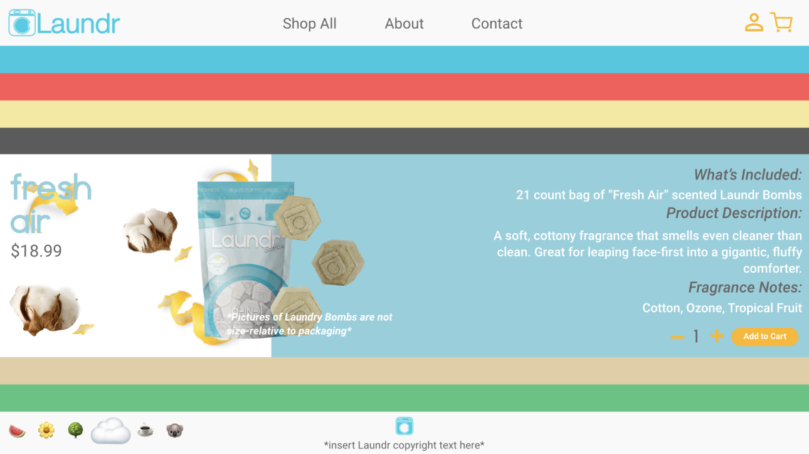
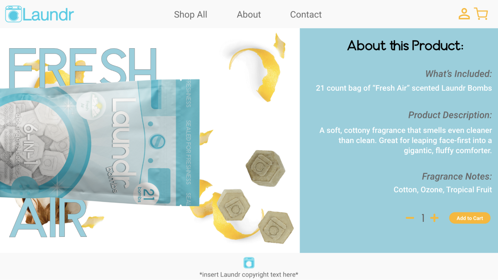
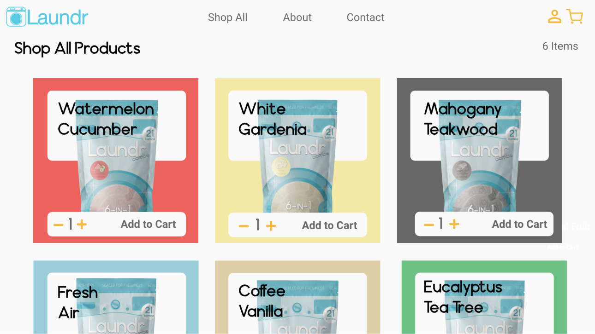
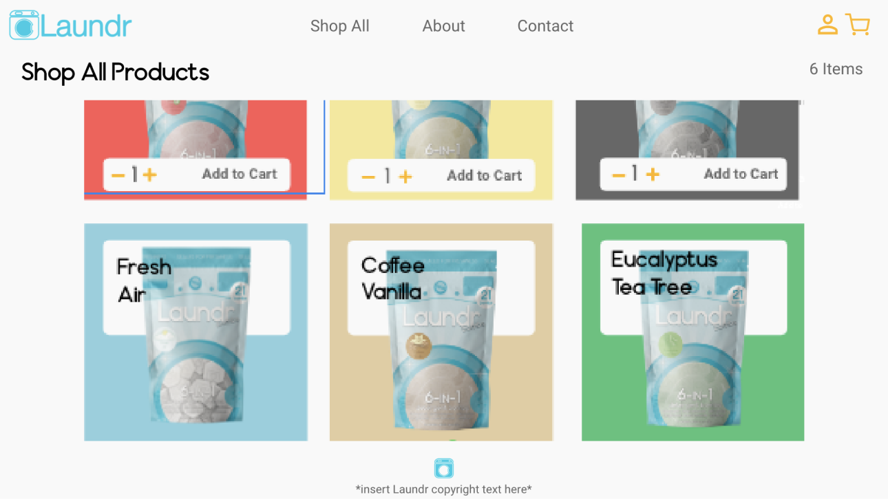
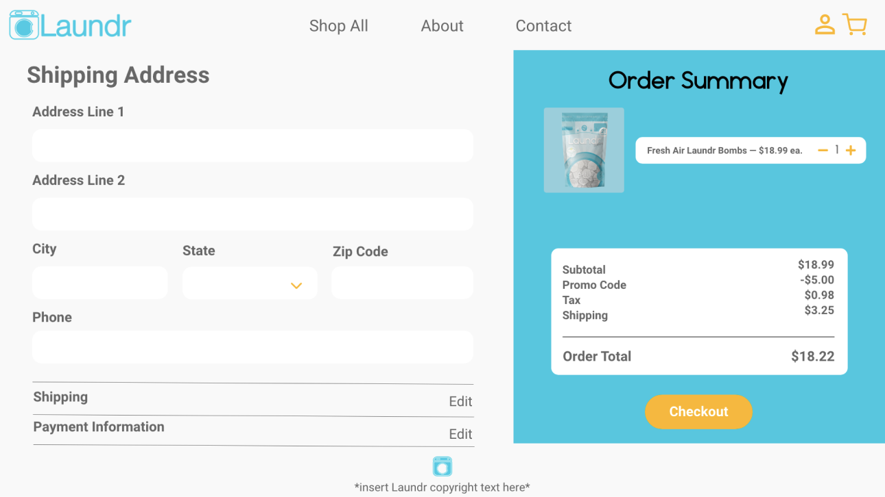
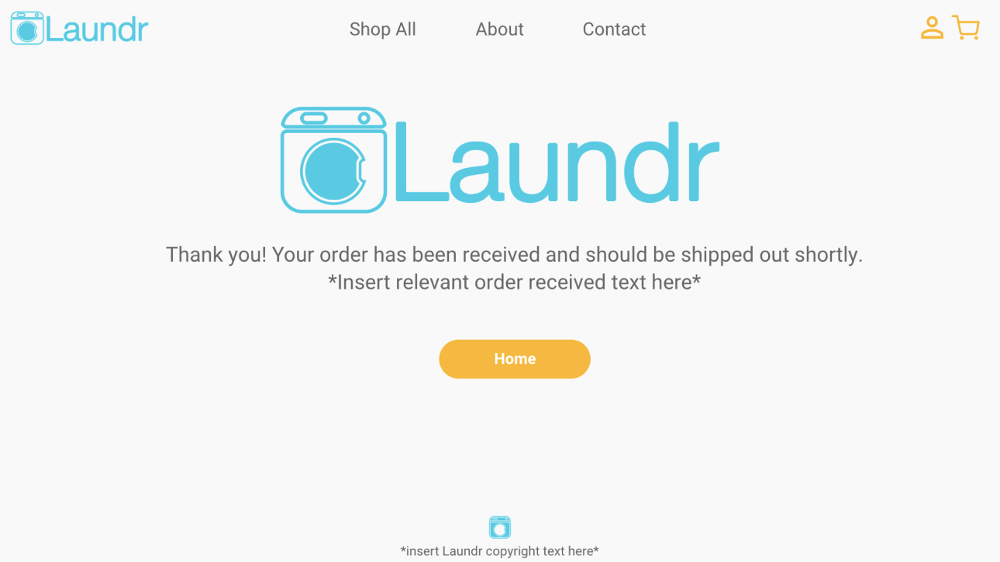

During my internship at Quantum Interface, I created a website for Summits4Sight, a non-profit organization that aims to bring awareness to Age-related Macular Degeneration (AMD) through the founder’s mountain treks around the world.During my Introduction to Software Engineering class in Fall 2020, a team of three others and I created an web application for the startup laundry company, Laundr (based in Gainesville, Florida). Laundr recently created a new line of laundry products called “Laundr Bombs” and we were tasked to create a prototype of the e-commerce website to sell this line of products, while using Agile methodology.
Semester-long Group Project
Ideation, Visual Design and Wireframes, Front-End Development
React Web Application with Firebase backend
Adobe XD High-Fidelity Wireframes; React Web Application
The representative from Laundr gave us little requirements for the e-commerce and the backend, but he had a specific vision for the front end: he wanted a UI and landing page similar to this chocolate e-commerce website. This project was the majority of my team’s first web development projects ever, so in some ways, we had to sacrifice some elements of the chocolate website to be easier for us to complete. The website would then serve as a prototype/early production version for Laundr.
The font pairing and the color selection for both the website and for the individual products were predetermined by Laundr. The representative from the company also specified that he wanted the landing page to be like the aforementioned chocolate website, where the user can swipe through the different products.
The landing page. Orignally, the idea was to have each stripe serve as a “tab” that the user could scroll through to get a better look at the products.
The landing page with one of the tabs open.
Example of a product page. The representative specified that he wanted the product bag to look like the “Laundr Bombs” were rolling out.
The “Shop All” Page.
The “Shop All” page scrolled all the way down.
The checkout page.
The order confirmation page.
View the React Web App on GitHub here.